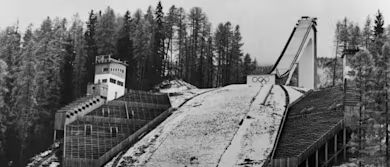

1956

Cortina 1956 — Les VIIes Jeux Olympiques d'hiver
Les premiers Jeux d'hiver télévisés. Cortina d'Ampezzo accueille la flamme olympique au cœur des Dolomites et fait entrer les Jeux dans l'ère moderne.
32 nations
24 épreuves
821 athlètes